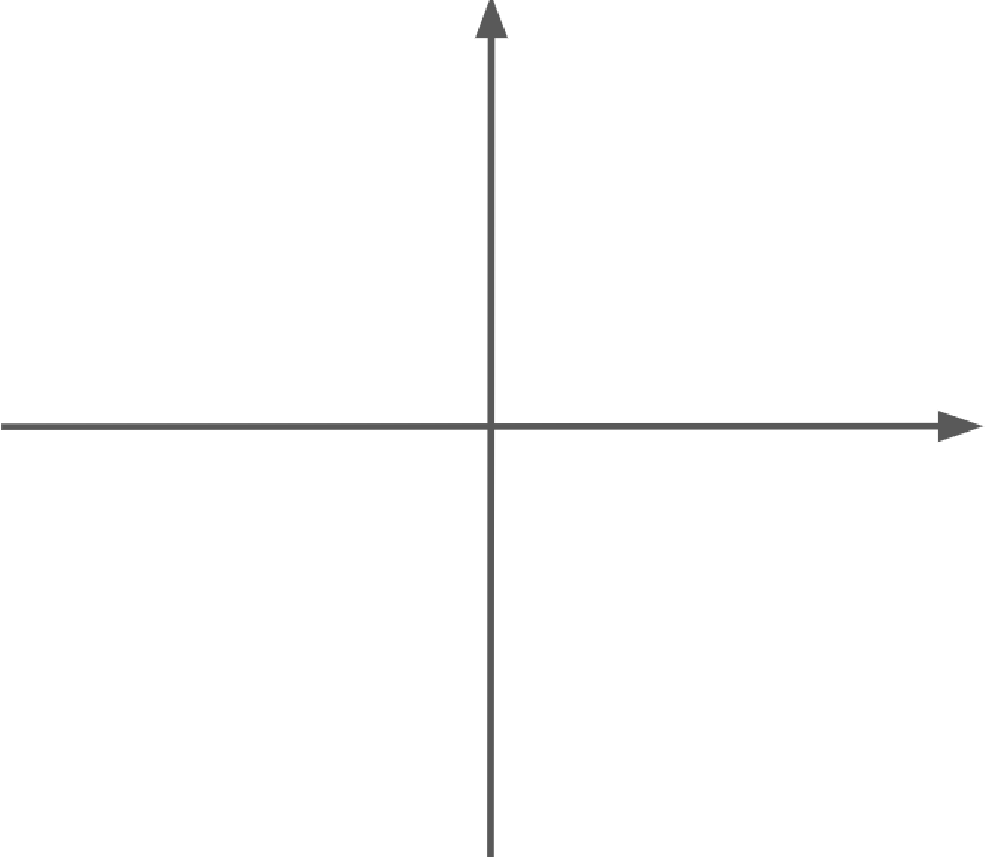

あなたの診断結果はこちら
あなたはAタイプです。
上司や職場に満足し、存在感も感じているため、順調なキャリアを築けているでしょう。
あなたはBタイプです。
上司や職場に満足しているが、新しく得るものがないと感じているため、上司に自分のキャリアについて相談しましょう。
あなたはCタイプです。
上司や職場で存在感を感じているが、パフォーマンスを発揮できていないと感じているため、上司と自分の役割や目標について相談しましょう。
あなたはDタイプです。
上司や職場とうまくいっていなく、パフォーマンスも発揮できず苦しんでいるかと思います。早急に上司と本音で話をしましょう。
満足 高
存在感 低

存在感 高
満足 低
組織でよく見られる３つのタイプ
会社（部署）でサーベイをとってみると、組織の今の状態がわかります。
どのポジションに多くの人がいるかによってタイプがわかれ、
よくある状態が３つのタイプになります。
満足 高
存在感 低
①満足度が高く
パフォーマンスが高い組織タイプ
②ぶら下がり従業員が
多い組織タイプ
③荒れ始め組織タイプ
存在感 高
満足 低
組織でよく見られる３つのタイプとは？
① 満足度が高くパフォーマンスが高い組織タイプ
＝退職者も少なく、会社と従業員がWinWinの状態を築けている理想の満足型組織
② ぶら下がり従業員が多い組織タイプ
＝大手企業や古いタイプの会社によくみられ、ここにいれば安心、潰れることはない、
パフォーマンスを発揮しなくても給与や昇進に対して影響がないと思っている。
ぶら下がり従業員の多い組織
③ 荒れ始め組織タイプ
＝ビックリ退職が増え始め、会社と従業員がWinWinの状態を築けにくくなっている。
荒れ始め型組織
あなたの会社（部署）が何タイプになるかは、Motifyでより詳細に診断できます。
Motifyでは、さらに深堀した3軸での結果（Motify理論）を見ることができます。
あなたの会社（部署）が何タイプになるかは、
Motifyでより詳細に診断できます。
Motifyでは、さらに深堀した3軸での
結果（Motify理論）を見ることができます。